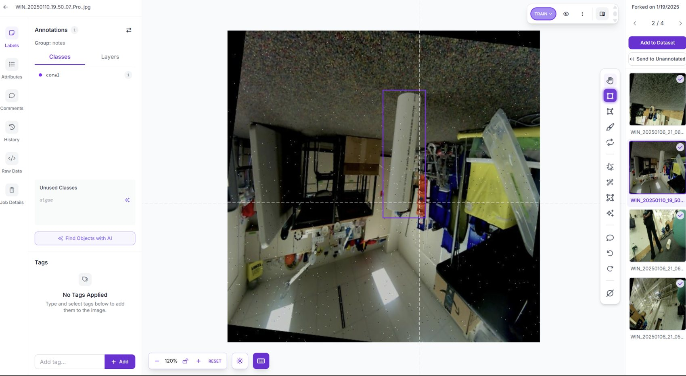
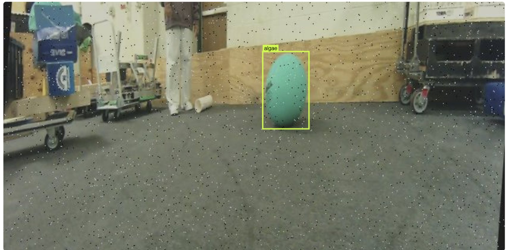

FRC Team 8020 · Jan–Mar 2025
Object Detection
From labeled images to a Limelight detector for coral and algae.
Robot-side testing footage · Video pending repository upload
Collect photos→Annotate · Roboflow→Train · Colab→TFLite · Limelight
01 / DATASET
Capture & label
I photographed game pieces and annotated coral and algae in Roboflow.

02 / TRAINING
Five model versions
Validation mAP: 94.8–95.3% across five Roboflow versions.

03 / DEPLOYMENT
Onboard inference
I used Google Colab to train and export a TFLite model for Limelight.

04 / TESTING
Beyond validation metrics
Algae were detected readily. Coral detection was more stable within about 70 cm; false detections remained a challenge.

Model validation scores describe validation data, not on-field detection accuracy.